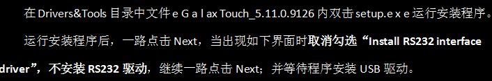
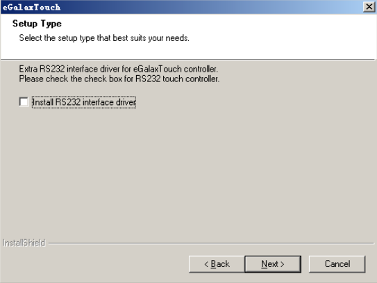

第一步：确保com3或com7端口设置为RS485模式（仅限于编号1201、1202样机工控机）
解决方法：
RS232模式
RS422模式
RS485模式
第二步：软件驱动安装
1、输入法安装（按下图顺序操作）
2、触摸屏驱动安装（按下图顺序操作）



3、图像采集卡驱动安装（按下图顺序操作）
（1）、64位操作系统——64位应用程序
先安装，顺序如下图：
再安装，此软件安装直接下一步可以安装完成
如出现此对话框表示此工控机已经安装过了！
最后安装此软件安装直接下一步可以安装完成
如出现此对话框表示此工控机已经安装过了！
（2）、当前三个软件安装完成后，就可以安装下图标软件了。
安装顺序如下图所示：

（3）、最后安装采集卡驱动（如下图标）
安装顺序如下图所示：
4、Update组件安装（按下图顺序操作）
先找到Frimware Update，鼠标单击后，出现如下图所示对话框
鼠标单击Manual，出现如下图所示对话框
当Output出现already up to date，则表示安装成功。
5、扩展串口安装（按下图顺序操作）
先找到Sapera Configuration，鼠标单击后，出现如下图所示对话框
选择COM11 ，点击Save Settings Now即可。
6、显卡驱动安装（选装）有安装上显卡的工控机需要安装
安装顺序如下图所示：